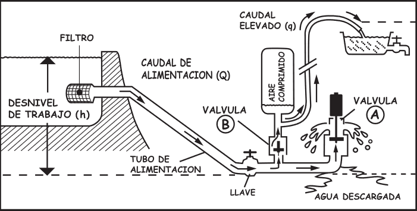

Funcionamiento de la bomba de ariete
La bomba de ariete hidráulico es un dispositivo ingenioso que utiliza la energía de un flujo de agua en movimiento para bombear agua a una altura mayor. Este mecanismo, inventado en el siglo XVIII, ha demostrado ser una solución eficiente y duradera para el bombeo de agua, especialmente en áreas rurales. A continuación, se describe en detalle su funcionamiento y los principios que lo rigen.
1. Principio Básico de Funcionamiento
El principio de la bomba de ariete se basa en la administración de un efecto conocido como "golpe de ariete". Este fenómeno ocurre cuando un flujo de agua que se mueve a alta velocidad es repentinamente detenido, generando un aumento de presión. La bomba de ariete aprovecha esta dinámica para forzar el agua a una altura superior mediante un ciclo de funcionamiento que involucra varias etapas.
2. Componentes Clave
Para entender cómo funciona una bomba de ariete hidráulico, es esencial conocer sus componentes principales:
- Entrada de agua: Es donde el agua se introduce desde una fuente, como un río o un estanque.
- Cámara de golpe (o cámara de compresión): Es el lugar donde se produce el golpe de ariete. Al cambiar la velocidad del flujo de agua, se genera un aumento de presión.
- Válvula de entrada (o válvula de pie): Permite el ingreso del agua a la cámara de golpe y se cierra de forma instantánea cuando el agua se detiene, creando una presión alta.
- Válvula de salida: Permite que el agua elevada salga de la cámara hacia el destino deseado. Esta válvula se abre una vez que se genera suficiente presión.
- Tuberías: Se utilizan para conectar todos los componentes y transportar el agua a la altura requerida.
3. Etapas del Ciclo de Funcionamiento
El proceso de bombeo en una bomba de ariete se puede dividir en varias etapas:
- Fase de Succión: El agua entra por la válvula de entrada. Debido a la diferencia de presión entre la fuente de agua y la cámara de golpe, el agua comienza a fluir hacia el interior del ariete.
- Cierre de la Válvula de Entrada: Cuando el agua en la cámara de golpe alcanza una velocidad suficiente, la válvula de entrada se cierra rápidamente. Este cierre súbito provoca un aumento de presión en la cámara de golpe, generando el efecto de golpe de ariete.
- Apertura de la Válvula de Salida: La presión creada por el golpe de ariete es suficiente para abrir la válvula de salida. En este momento, parte del agua se fuerza a salir hacia el tubo de descarga. Esta salida de agua ocurre brevemente y con gran presión.
- Ciclo Repetitivo: Una vez que el agua ha sido impulsada, la presión en la cámara de golpe disminuye y la válvula de salida se cierra. La válvula de entrada se abre nuevamente, permitiendo que entre más agua y reinicie el ciclo. Este proceso se repite, y aunque el flujo de agua continuo no es uniforme, se acumula agua en la parte superior y se va transportando hacia el lugar deseado.
4. Ventajas de Su Mecanismo de Funcionamiento
El diseño de la bomba de ariete hidráulico presenta varias ventajas clave:
- Sin necesidad de energía externa: A diferencia de las bombas eléctricas o de combustible, el ariete no requiere ninguna fuente de energía externa, ya que utiliza la energía del agua en movimiento.
- Simplicidad y durabilidad: Su diseño mecánico simple minimiza el riesgo de fallos y facilita el mantenimiento. Con pocas piezas móviles, la bomba puede operar durante años con un mínimo requerimiento de mantenimiento.
- Versatilidad: Puede usarse en una variedad de aplicaciones, desde la irrigación agrícola hasta el suministro de agua potable, lo que la hace adecuada para diversas ubicaciones y condiciones.
5. Consideraciones para su Instalación y Uso
- Ubicación de la fuente de agua: Es esencial que la fuente de agua esté a una altura suficiente para garantizar un flujo efectivo hacia el ariete. La inclinación del terreno y la distancia a la fuente también son factores a considerar.
- Ángulo de inclinación: Un ángulo de inclinación adecuado es vital para maximizar la eficiencia de la bomba. Los terrenos accidentados pueden influir en el rendimiento, por lo que es importante tener en cuenta la topografía.
- Calibración y ajuste: Cada instalación puede requerir ajustes específicos para optimizar el flujo de agua y la presión generada por el ariete. Las válvulas deben estar correctamente dimensionadas y ajustadas para funcionar de manera óptima.
